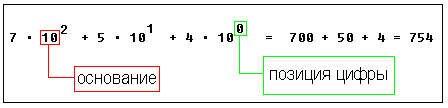
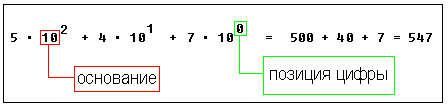
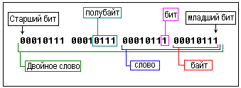
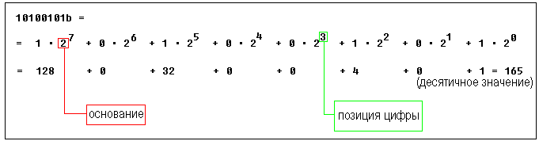
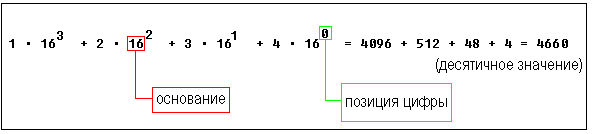
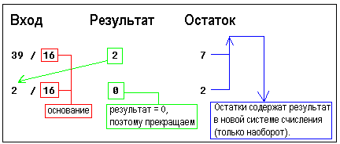
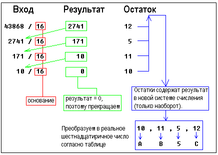
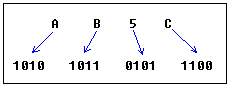
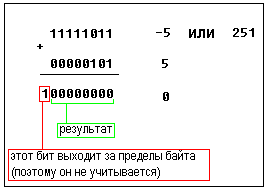
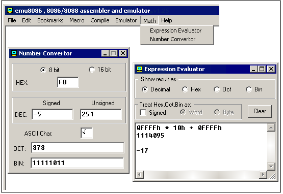

TEXT SCRAMBLING in TRIAL VERSION OUTPUT! In evaluation mode, Help+Manual will scramble individual characters in random words in your published output files. This is a limitation of the free trial version. This help system was created with an evaluation copy of Help+Manual.
Системы счисления
Перевод: Поляков А.В. http://www.avprog.narod.ru
Что это такое?
Есть много способов для представления одного и того же числового значения. В давние времена люди использовали палочки для подсчета. Позднее научились рисовать палочки на земле и в конечном счете на бумаге. Так что число 5 вначале представлялось как: | | | | | (пять палочек).
Еще позднее римляне начали использовать различные символы для большого количества палочек: | | | означало три палочки, а V означало пять палочек, и наконец X использовалось для представления 10-ти палочек!
Использование палочек для счета было хорошей идеей для того времени. А использование символов вместо реальных палочек было еще лучше. Одним из наиболее удобных современных способов представления чисел является десятичная система. Почему? Потому что она использует основное свое достижение - идею использования символа для подсчета ничего. Около 1500 лет назад в Индии ноль (0) был впервые использован как число! Позднее он был использован на Ближнем Востоке как арабский sifr. И наконец, представлен на западе как латинский zephiro. Вскоре вы увидите, какое большое значение имеет эта идея во всех современных системах счисления.
Десятичная система
Большинство людей сегодня используют десятичное представление числа. В десятичной системе 10 цифр:
0, 1, 2, 3, 4, 5, 6, 7, 8, 9
Этими цифрами можно представить любое значение, например:
754.
Значение формируется путем суммирования всех цифр, умноженных на основание (в нашем случае основание равно 10, т.к. в десятичной системе 10 цифр) в степени, равной позиции цифры (отсчет ведется с нуля):

Позиция каждой цифры - очень важный фактор! Например, если вы поместите "7" в конец:
547
то это будет уже другое значение:

Важное замечание: любое число в нулевой степени равно единице, даже ноль в нулевой степени равен 1:
Двоичная система
Компьютеры не такие умные, как люди (во всяком случае пока). Легко сделать электронную машину с двумя состояниями: включено и выключено, или 1 и 0. Компьютеры используют двоичную систему, которая использует всего две цифры:
0, 1
И поэтому основание в двоичной системе равно 2.
Каждая цифра в двоичном числе называется БИТ, 4 бита - это ПОЛУБАЙТ, 8 битов это БАЙТ, два байта - это СЛОВО, два слова - это ДВОЙНОЕ СЛОВО (используется редко):

В конец двоичного числа принято добавлять букву "b". Таким образом мы можем определить, что 101b - это двоичное число, которое соответствует десятичному значению 5.
Двоичное число 10100101b эквивалентно десятичному значению 165:

Шестнадцатиричная система
Шестнадцатиричная система использует 16 цифр:
0, 1, 2, 3, 4, 5, 6, 7, 8, 9, A, B, C, D, E, F
И поэтому основание в шестнадцатиричной системе равно 16.
Шестнадцатиричные числа являются компактными и легкими для чтения. Их легко преобразовать в двоичную систему и наборот. Каждый полубайт (4 бита) можно преобразовать в шестнадцатиричную цифру, пользуясь этой таблицей:
Принято в конец шестнадцатиричного числа добавлять букву "h", таким образом мы можем определить, что 5Fh - это шестнадцатиричное число, которому соответствует десятичное значение 95. Мы также добавляем "0" (ноль) в начало шестнадцатиричного числа, если оно начинается с буквы (A..F), например 0E120h.
Шестнадцатиричное число 1234h эквивалентно десятичному 4660:

Преобразование значений десятичной системы в другие
Чтобы преобразовать число из десятичной системы в какую-либо другую, необходимо выполнить целое деление десятичного значения на основание нужной системы счисления. Получим результат и остаток. Затем будем делить результат на основание системы, пока результат не будет равен нулю.
Остатки используются для представления значения в новой системе счисления.
Давайте преобразуем число 39 (основание 10) в шестнадцатиричную систему (основание 16):

Вы видите, что мы получили шестнадцатиричное число 27h. Все остатки в этом примере меньше 10, поэтому мы не используем буквы.
Здесь приведен пример перевода числа с большим количеством цифр: Давайте преобразуем десятичное число 43868 в шестнадцатиричную форму:

Результат получаем такой: 0AB5Ch, используя описанную выше таблицу для преобразования остатков больше 9 в соответствующую букву.
Используя тот же принцип мы можем преобразовать число в двоичную форму (используя 2 как делитель), или преобразовать шестнадцатиричное число в двоичное число, используя описанную выше таблицу:

Вы видите, что мы получили следующее двоичное число: 1010101101011100b
Числа со знаком
Нет никакой уверенности в том, каким является шестнадцатиричное число 0FFh - отрицательным или положительным. Оно может быть представлено двумя десятичными значениями: "255" или "- 1".
8 бит можно использовать для создания 256 комбинаций (включая ноль), поэтому мы просто предполагаем, что первые 128 комбинаций (0..127) будут представлять положительные числа, а следующие 128 комбинаций (128..256) будут представлять отрицательные числа.
Чтобы получить число "- 5", мы должны вычесть 5 из максимально возможного числа комбинаций (256). Так мы получим: 256 - 5 = 251.
Использование этого способа для представления отрицательных чисел имеет определенный смысл. В математике, если вы прибавите "- 5" к "5", вы должны получить ноль. То же самое случается, когда процессор складывает два байта: 5 и 251. Результат превышает значение 255, поэтому из-за переполнения процессор получает ноль!

Когда используется комбинация 128..256, то старший бит всегда равен 1. Это используется для определения знака.
Тот же самый принцип используется для слов (16-ти битовых значений). С шестнадцатью битами можно создать 65536 комбинаций, первые 32768 комбинаций (0..32767) используются для представления положительных чисел, а следующие 32768 комбинаций (32767..65535) представляют отрицательные числа.
В Emu8086 имеются некоторые удобные инструменты для преобразования чисел и вычисления любых числовых выражений. Все их можно увидеть, выбрав пункт меню Math:

Number Convertor - преобразователь чисел позволяет вам преобразовывать числа из любой системы в любую систему. Просто напечатайте значение в любом текстовом поле и это значение будет автоматически преобразовано во все другие системы. Вы можете работать как с 8-ми битовыми, так и с 16-ти битовыми значениями.
Expression Evaluator - вычисление выражений может быть использовано для вычислений выражений, в котороых имеются числа, представленные в различных системах счисления, и преобразования чисел из одной системы в другую. Напечатайте выражение и нажмите ENTER. Результат появится в выбранной системе счисления. Вы можете работать со значениями до 32 битов. Если установлен флажок Signed, то программа будет считать все значения знаковыми (+ или -), кроме десятичных чисел и двойных слов. Двойное слово всегда расценивается как знаковое значение, поэтому 0FFFFFFFFh преобразуется в -1. Например, вы хотите вычислить: 0FFFFh * 10h + 0FFFFh (максимальное местоположение памяти, доступное процессору 8086). Если вы установите флажки Signed и Word, вы получите -17 (потому что выражение будет вычислено как (-1) * 16 + (-1) . Чтобы выполнить вычисления без знака, уберите флажок Signed, тогда выражение будет вычислено как 65535 * 16 + 65535 и вы должны получить 1114095. Вы можете также использовать Number Convertor для преобразования не десятичных чисел, знаковых десятичных значений, и выполнять вычисления с десятичными значениями (если это для вас проще).
Эти операции поддерживаются: ~ НЕ (инвертирует все биты).
Двоичные числа должны иметь суффикс "b", например: 00011011b
Шестнадцатиричные числа должны иметь суффикс "h", и начинаться с нуля если первая цифра - это буква (A..F), например: 0ABCDh
Восмеричные (основа 8) числа должны иметь суффикс "o", например: 77o
|